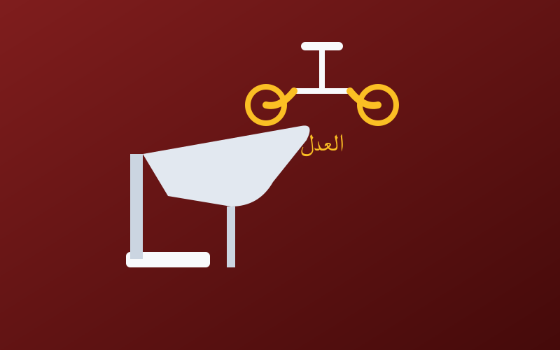

The Story of Sayyid the Butcher | A Little Story
← Back to Articles
It is told that in a country of the "universe and corruption" world, people of different shapes and kinds lived; some boasted over others with money, standing (hasab) and lineage (nasab).
(Today's question: what is the difference between hasab, nasab and sabt — lineage, ancestry and subtribe?)
("Marry the woman for her standing, her lineage, her beauty and her religion — succeed with the one of religion, may your hands be dusted.")
Now, what if the application and vision of religion differ from what the sent Messenger brought? How can someone claim to be of his family while his morals have nothing to do with them? The religion that will prevail in the world is the religion of morals and justice. And back to the story: the one who claimed his lineage reached Ibn Adnan said: we are his descendants, we and we... and you must do this and that. But to be objective, not all of them are the same — among them are the righteous and pious, and among them are the wicked and vile.
Then some people began mocking one another with nicknames. Before long, a man who had a shop (an epic one — ملحمة) where he worked as a butcher passed by them; he greeted them (for peace starts from the walking one to the standing one), greeted and went on his way. But no sooner had he passed them than one of the standing ones taunted him: "Hey beautician! Prepare us a kilo of suckling meat!" The man stopped for a moment, did not turn around, nodded his head, swallowed his anger, said "la hawla wa la quwwata illa billah", opened his shop on the street corner, and started his work as usual...
Then the twelfth of Rabi' al-Awwal arrived — although its name means "first spring", it comes at the wrong time — and the Sayyid's group prepared to collect tributes from the shopkeepers, to fund the huge "green scream": printing posters through imported Chinese presses, paying enormous sums to organize events, to show the world how much the people of Atlanta love the light of guidance — "and beings are light and the mouth of time smiles" — drawing on Ahmed Shawqi or Hafez Ibrahim: "The mother is a school; if you prepare her, you prepare a people of good morals."
The Sayyid and some of his entourage reached the butcher's shop. He said: peace be upon us. The butcher replied: and upon you. A man of the entourage said: Do you know that you and the artist are the same? Meaning you are both "beautifiers" — but at the very least, the artist's fragrance is purer and his voice delights our ears; while you butchers smell of blood, and you raise your prices at occasions! Now, harvest the news and hand over the green money, to show your love for him through us — our way is the best.
The butcher was astonished by the impudence of the Sayyid, his entourage, their words, their falsehood and slander. He was holding the big knife — of the kind of knives used by the women who had been invited by the wife of the Aziz when Joseph was presented to them — and he thought: should I take the knife and strike their necks with an iron hand? He thought, then reflected, then thought again (and all of this happened in less than a femtosecond — an invention of Ahmed Zewail), then said: No. If I do this, I would have wronged them; and we only attack those who attack us — eye for eye, tooth for tooth, and the one who starts is more unjust.
So the butcher refused to give them the tribute, and told them: love comes by improving people's conditions as much as possible, not by showing fake slogans and screams. The beats of the Sayyid's heart quickened until he convulsed; he drew his firearm — a 9mm Glock — and threatened and warned him, but the butcher did not budge from his place... So he fired at him, and the man fell on the spot, and the shop was closed and the case was covered up.
The Sayyid had a son, and the butcher had a son, and both had left Atlanta for Phoenicia to study. The first's son earned a scholarship by virtue of his father's standing in society; the other's came from what his uncles had collected for him. When they traveled, studied, lived, and got to know each other, they loved living in Phoenicia, for its laws hold justice, no discrimination exists there, and people there are like the teeth of a comb.
Then came the day when the Sayyid's son and the butcher's son competed for a job in their new country after obtaining citizenship. The company owner said after testing their performance: you both did well and passed the test, but I chose this one because he is kinder, gentler and more humble; as for you, no. It grieved him, and he said: But I am the Sayyid's son! He replied: That doesn't count here; that is in Atlanta, the lost city.
Conclusion
I hope you enjoyed reading the story — please write your comments: do you want it to be like this, or should I be clearer? Do you like the foreign examples in the middle of the text, or should I avoid them? Do you like grilled or fried? Stay in God's safety.
Would you like there to be a special section for the lessons and morals drawn from the story?
Note: the text has not been reviewed, and it may read to a first-time reader like iron sewn with a needle, but love it is.
The original article was published on the blog Mafaateeh Al-Hamdani | The Veteran by Mohammed Taher Al-Hamdani.